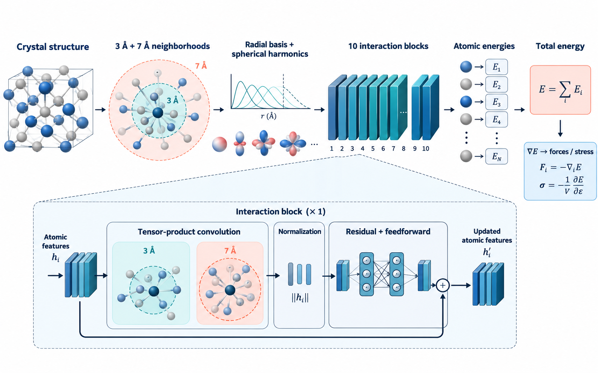

PAPER-GROUNDED MODEL ATLAS 2026.10 / SNAPSHOT
看见材料模型
如何工作。
从晶体输入到能量与力的预测，用一张图理解每一种架构。整理 Matbench Discovery 活跃模型、对应论文和去重后的示意图。
53模型条目
35架构图
42有分数的排名
FEATURED ARCHITECTURE / 01

01 / PROPHET-OAME-MBD探索架构的内部逻辑 ↗✳
同一论文、同一架构的模型变体合并展示。每张图都以论文内容为依据生成；没有对应架构论文的条目在模型索引中说明。
EXPLORE THE ARCHITECTURES01 / ARCHITECTURE COLLECTION
架构图库
按方法浏览，或搜索模型名、论文编号与结构关键词。
35张架构图
没有匹配的架构图。试试其他关键词或分类。
02 / COMPLETE MODEL INDEX
模型索引
有综合分数的模型按快照排名；缺少 CPS 指标的活跃模型列在最后。
53个模型条目
| 排名 | 模型 | CPS | 论文来源 | 架构图 |
|---|
“—”表示未找到对应 arXiv 模型论文或缺少默认 CPS 所需指标。榜单为注册表快照，不代表实时名次。
03 / SCOPE & PROVENANCE
如何阅读这个图库
架构图由图像生成工具依据论文内容制作，呈现主要模块和信息流；训练细节、层数和数学定义请以原论文为准。CGCNN+P 等改变训练流程的模型，图中会明确标出训练分支。
排名依据 Matbench Discovery 官方模型注册表的 e3d7966 快照与网站默认综合分数公式。页面把有分数的前 42 名和其余 11 个活跃模型一起收录。
CONTENT NOTES
01论文先行
先核对 arXiv 资料，再绘制对应架构。
02合并重复
相同主干的不同规模和训练变体共用一张图。
03保留空缺
没有对应论文的模型不臆造架构。